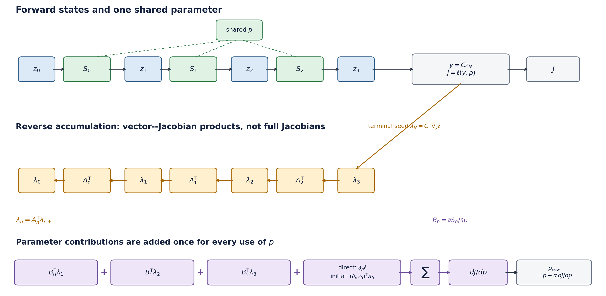

6.3.1. Backpropagation through a stepped update¶
This original, small example makes the bookkeeping behind reverse-mode automatic differentiation visible. It is deliberately an algebraic recurrence, not a fracture calculation. For a complementary visual introduction to reverse-mode differentiation in physics, see the Physics-Based Deep Learning discussion of differentiable physics. That link is a pedagogical reference only: no external code, figure, or derivation is reproduced here.
{kind=link}

Figure 6.2 One parameter can influence a final loss at every update. Reverse mode passes a cotangent backwards and adds one parameter contribution per use of that parameter.¶
6.3.1.1. Start from a sequence of update maps¶
Let a state evolve through \(N\) discrete updates,
where the same parameter vector \(p\) may appear in every \(S_n\). A final field or state is observed by \(y=Cz_N\), and a scalar loss is formed as
Here \(C\) is assumed fixed with respect to \(p\). If an observation operator also depends on \(p\), its derivative belongs in the direct parameter dependence of the final observable/loss.
Define the local state and parameter derivatives
For a scalar loss, the terminal adjoint is the vector
and reverse accumulation is
The resulting total derivative is
This is \(dJ/dp\), the gradient of the final scalar observable/loss with respect to the input parameter \(p\). An optimisation algorithm uses that gradient in a separate choice such as
where the learning rate \(\alpha\) and any line search, regularisation, or constraint handling belong to the optimisation method rather than to reverse accumulation itself.
If \(z_N\) is a field, \(\lambda_N\) has one entry per field degree of freedom.
For a scalar loss, the loss fixes the seed. For a vector-valued output, choose
a seed \(v\) to obtain a vector–Jacobian product \(A_n^\mathsf{T}v\). Neither
case requires forming a full Jacobian matrix. This is why a scalar
loss.backward() can be economical even when the state is large.
6.3.1.2. A three-step scalar calculation that can be checked by hand¶
Use the explicit recurrence
It is a relaxation/load analogue only, not PhAST, phase-field fracture, or a claim about a finite-element time integrator. The parameter \(p\) appears at every step, so it provides a clean miniature of the shared-parameter sum. For this scalar homogeneous relaxation, choosing \(p>0\) and \(0<\Delta t\,p<1\) makes \(0<1-\Delta t\,p<1\). That is a property of this one recurrence, not a universal CFL or solver-stability rule.
Take
Then \(A_n=\partial x_{n+1}/\partial x_n=1-\Delta t p=0.84\) and \(B_n=\partial x_{n+1}/\partial p=-\Delta t x_n\). The forward states and local parameter derivatives are:
step \(n\) |
\(x_n\) |
\(x_{n+1}\) |
\(B_n=-\Delta t x_n\) |
|---|---|---|---|
0 |
0.400000 |
0.636000 |
-0.0800000 |
1 |
0.636000 |
0.834240 |
-0.1272000 |
2 |
0.834240 |
1.000762 |
-0.1668480 |
The terminal seed is \(\lambda_3=x_3-y_\star=0.1007616\). Therefore
The corresponding reverse contributions are:
step \(n\) |
\(\lambda_{n+1}\) |
\(B_n\lambda_{n+1}\) |
|---|---|---|
0 |
0.07109738 |
-0.005687791 |
1 |
0.08463974 |
-0.010766175 |
2 |
0.10076160 |
-0.016811871 |
The displayed loss has no direct \(p\) dependence and \(x_0\) is fixed, so its two non-sum terms are zero. Adding the three entries in the last column gives
Those zero terms are a feature of this chosen calculation, not a general rule: a parameter-dependent observation/loss or parameter-dependent initial state contributes through the first or last term of the total-derivative formula.
The accompanying script independently evaluates the same recurrence with PyTorch and a central finite difference. Its retained receipt records
The small finite-difference discrepancy is truncation and floating-point roundoff, not a new model effect. The complete check takes under five seconds on the recorded CPU and is reproducible with:
python source/book/scripts/build_backprop_example.py
Run this command from the extracted public edition’s root. It updates the
figure under source/book/figures/ and writes a new validation receipt under
reviews/, leaving the published evidence receipt unchanged.
The machine-readable validation receipt retains the measured runtime, all forward/reverse values, and the analytic, automatic-differentiation, and central-difference assertions used here.
The check confirms this scalar recurrence and its stated arithmetic. It does not validate a fracture derivative or a complete optimisation workflow.
6.3.1.3. A restricted fixed-history AT2 connection¶
The packaged public PhAST source documents an AT2 damage weak form and an
adjoint CG backward for selected damage-solve inputs in
vendor/PhAST/src/phast/solvers/damage_solver.py. For an unconstrained
interior solve (or a residual restricted to free damage degrees of freedom),
with spatially constant \(G_c\) and no mesh-dependent \(\gamma\) correction, a
useful fixed-history, fixed-mechanics reduced notation for that damage
subproblem is
where \(M\) and \(K\) are mass and stiffness assemblies, while \(M_H\) and \(b_H\) collect the history-weighted assembly. With \(H\), mechanics, and \(\ell\) held fixed, let
Implicit differentiation of this reduced residual gives
The direct term remains only when the chosen loss explicitly depends on \(G_c\). The minus sign follows from differentiating \(R_d=0\) and solving for \(dd/dG_c\).
This is intentionally narrower than an end-to-end fracture claim. In a full load history, mechanics can change \(H\); an irreversibility update may use a non-smooth maximum; damage bounds can activate; and nonlinear/staggered iterations and stopping criteria matter. Active-set changes, history changes, and convergence failures must be accounted for by the selected differentiation rule. A discrete model change is not automatically differentiable merely because it is written in tensor operations.
6.3.1.4. Check your understanding¶
In the scalar example, why are there three \(B_n\lambda_{n+1}\) terms even though there is only one scalar parameter \(p\)?
Suppose \(x_0=x_0(p)\) instead of being fixed. Which term in the total derivative changes, and why is it propagated by \(\lambda_0\) rather than \(\lambda_3\)?
Which assumptions must remain fixed before the displayed AT2 \(G_c\) identity can be treated as a reduced-subproblem calculation?
Short answers
The single parameter is used once in each of the three update maps. Each local use affects the final loss through the remaining steps, so reverse mode adds one local parameter contribution for each use.
The initial-state term \((\partial z_0/\partial p)^\mathsf{T}\lambda_0\) becomes nonzero. The adjoint at step zero contains the sensitivity of the final loss to a perturbation of the initial state after every later update has been traversed backwards.
The mechanics-dependent history field \(H\), the mechanics state, and \(\ell\) are held fixed. The identity is not by itself a statement about history maxima, bounds/active sets, staggered convergence, or a total derivative through a full fracture load path.